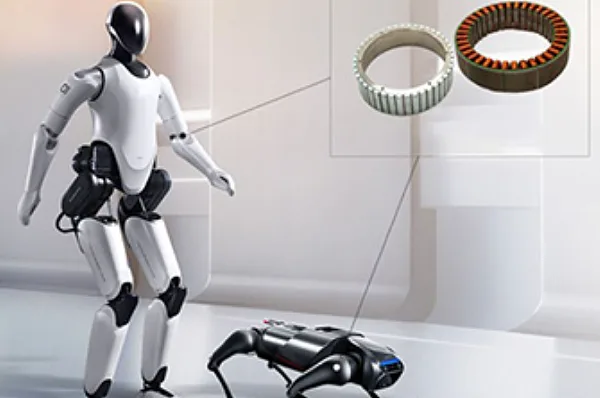

China's Humanoid Actuator Suppliers
The full joint stack — motors, reducers, screws and the companies that assemble them.
Every rotating joint of a humanoid runs on a frameless torque motor. For years the West set the standard. Now Inovance, Kinco and Leadshine are turning the humanoid joint motor into a Chinese commodity.

A humanoid robot is a stack of joints, and every rotating joint is driven by a frameless torque motor — a ring-shaped, ironless-core motor that wraps around the joint itself. UBTECH's Walker X packs 36 of them in high-performance actuators; AgiBot's A2 pairs them with planetary reducers for 52 Nm/kg joint modules. For decades the field belonged to Western names like Kollmorgen and Allied Motion. China now owns the volume.
A frameless motor is a rotor and stator with no housing — it is embedded directly into the joint structure, saving weight and axial space. Its high torque density and low inertia give fast, precise motion with no backlash, exactly what a humanoid needs to balance, walk and grasp. Pair it with a harmonic or planetary reducer and you get the integrated "joint module" that nearly every Chinese humanoid — Unitree, AgiBot, UBTECH, Xiaomi — is built around.
| Company | Inovance (汇川技术) | Kinco (步科股份) | Leadshine (雷赛智能) |
|---|---|---|---|
| Role | China's #1, 50%+ domestic share | The pioneer, first to mass-produce | Full joint-module platform |
| 2026 signal | 4th-gen TMB series, 25-115mm full size range; axial-flux next-gen | 4th-gen FMK, 18.3 Nm/kg; 35k units in 2026 Q1 | In supply systems of 80% of major humanoid OEMs |
| Edge | In-house encoder + driver + FOC algorithms | Bound to Xiaomi & UBTECH | Motors + reducers + dexterous hands in one |
Shenzhen-based Inovance (汇川技术, 300124) is China's servo champion and now the country's largest frameless torque motor maker, holding more than half of domestic share. Its fourth-generation TMB frameless motors span the full 25-115mm range, and the company is already developing next-generation axial-flux ultra-thin frameless motors for even denser joints. Because Inovance makes its own encoders, servo drivers and FOC control algorithms, it can ship a complete, tuned joint solution — a moat few rivals can match.
Kinco (步科股份, 688160) was the first Chinese company to mass-produce frameless torque motors. Its fourth-generation FMK series, launched in July 2025 alongside a hollow-shaft RD driver, reaches 18.3 Nm/kg torque density — among the highest in China. Kinco has deep ties to Xiaomi and UBTECH, shipped roughly 35,000 units in 2026 Q1, and is now pushing into humanoid-specific platforms after dominating collaborative-robot joints.
Leadshine (雷赛智能, 002979) is the most integrated challenger — its 2024-founded robotics arm combines high-density frameless motors, hollow-cup motors, planetary and harmonic joint modules and dexterous hands, and it claims to have entered the supply systems of 80% of China's major humanoid OEMs. MOONS' (鸣志) pairs frameless motors with its leading coreless lineup. Specialists such as Guangzhou Haozhi, Chengdu Weijing, Hangzhou SDM (which also makes magnetic encoders) and Han's Laser-group Han's Motor round out a fast-deepening bench.
Three structural advantages explain the shift. First, rare-earth magnets: China controls most of the world's NdFeB magnet production, giving domestic motor makers a raw-material cost edge. Second, the servo ecosystem — Inovance, Leadshine and Kinco all built decades of servo expertise for industrial automation and simply ported it to robot joints. Third, integration: the same firms sell the motor, driver, encoder and reducer, so a humanoid maker buys one tuned package instead of stitching five vendors together.
Inovance (汇川技术) leads China's frameless torque motor market with more than 50% domestic share — its 4th-gen TMB series spans the full 25-115mm range.
Frameless torque motors drive rotating joints in humanoid and collaborative robots. The rotor and stator mount directly inside the joint, giving high torque density with no backlash — UBTECH's Walker X alone packs 36 of them.
Chinese makers such as Inovance, Kinco and Leadshine now match Western torque-density specs — Kinco's FMK hits 18.3 Nm/kg — while undercutting prices via rare-earth advantage and a full in-house servo ecosystem.
Kinco (步科股份) ships its 4th-gen FMK frameless motors to Xiaomi and UBTECH, and delivered roughly 35,000 units in 2026 Q1.
The full joint stack — motors, reducers, screws and the companies that assemble them.
The linear joints of a humanoid, driven by the same domestic supply chain.
China's coreless and frameless motor leader.
Motion-control platform feeding 80% of humanoid OEMs.
Company profiles, product pages and supplier analysis for China's robotics ecosystem.